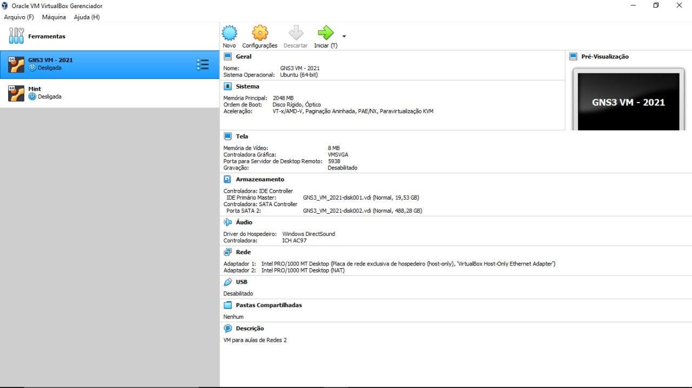
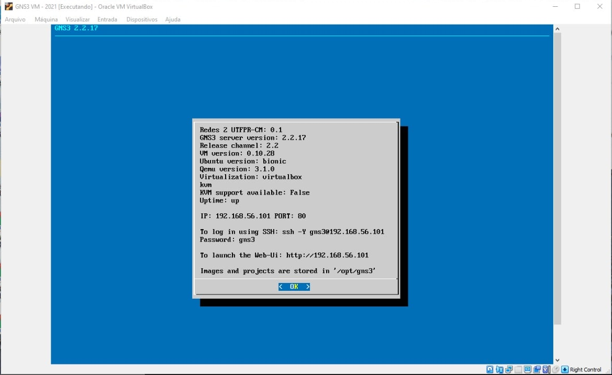
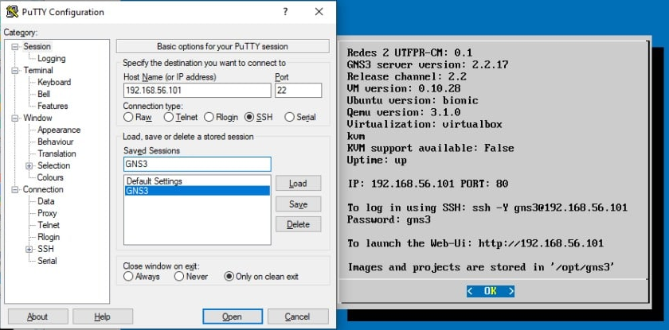
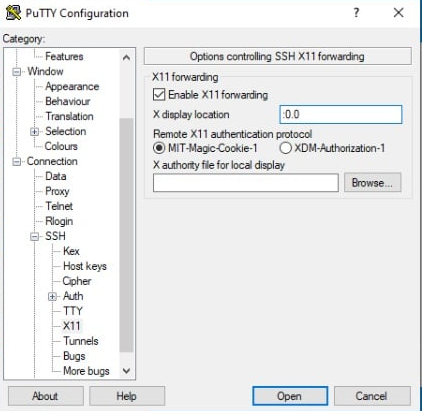
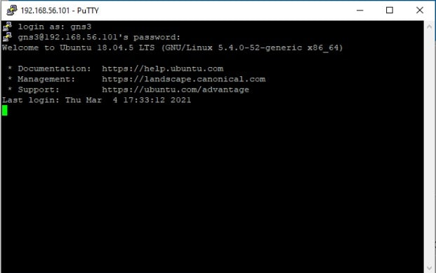
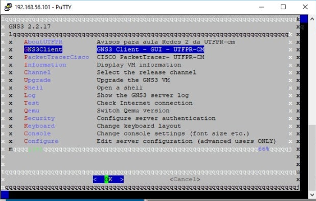

Configuração do Windows para acessar o ambiente gráfico do Linux via SSH
UTFPR - Universidade Tecnológica Federal do Paraná, campus Campo Mourão
Autor: Prof. Dr. Luiz Arthur Feitosa dos Santos
E-mail: luizsantos@utfpr.edu.brAutora das imagens: Isabela De Almeida Gantzel
Segue como configurar o Windows para acessar o ambiente gráfico do Linux via SSH. O intuito principal deste texto é mostrar aos alunos do curso de BCC (Bacharelado em Ciência da Computação) da UTFPR de Campo Mourão, como acessar o GNS3 e o PacketTracer a partir de uma VM (Máquina Virtual) disponibilizada para as disciplinas de Redes de Computadores e Segurança. Mas tais passos podem ser adaptados para outras situações, não só para acessar VMs.
Tal VM tem o GNS3 cliente/servidor e o PacketTracer da CISCO e devem ser acessados via SSH a partir da máquina hospedeira/real.
Baixando os arquivos
É necessário baixar os seguintes arquivos:
- Virtual Box - que é o gerenciador de VM;
- VM do GNS3/PacketTracer que está disponível no Moodle das disciplinas de Redes1, Redes 2 ou Segurança;
- Putty - que é o cliente SSH para o Windows;
- Xming - que será responsável pela reprodução do ambiente gráfico do Linux (ambiente X) no Windows.
Instalação
- Instale o Virtual Box;
-
Localize o arquivo
.ovada VM, esse já irá configurar e instalar apropriadamente a VM no Virtual Box.
- Após isso inicie a VM e assim que ela estiver plenamente ligada verifique qual IP foi atribuído à interface
eth1- essa interface deve estar configurada no Virtual Box comohostonlyoubridge. A imagem a seguir mostra a VM da disciplina, que apresenta o IP em questão na tela inicial, neste exemplo é o 192.168.56.101;

Atenção, se o IP iniciar com
10., como por exemplo10.0.2.5, pode ser que a interface (adaptador 2) no Virtual Box, esteja configurada comoNATe nãohostonlyoubridge. Neste caso desligue a VM e vá na configuração de rede da VM, no Virtual Box. O IP atribuído à VM deve ser “pingável” da máquina real/hospedeira para a virtual. - Após isso inicie a VM e assim que ela estiver plenamente ligada verifique qual IP foi atribuído à interface
- Instale o Xming e tenha certeza que ele ficará em execução durante o SSH;
Se o Xming não estiver em execução durante o próximo passo, não será possível iniciar aplicativos gráficos a partir do SSH.
- Normalmente não é necessário instalar o Putty, basta localizá-lo na pasta onde ele foi baixado e clicar para executá-lo. Depois:
- Na tela inicial do Putty preencha o
Host Name (or IP address), com o IP da VM. - Também é recomendável dar um nome para essa conexão. Desta forma não é necessário ficar digitando esses valores toda vez que o Putty for executado. Isso é feito dando um nome em
Saved Sessionse clicando no botãoSave.

- Agora é necessário configurar o Putty para encaminhar via SSH o ambiente gráfico do Linux. Isso é feito no menu lateral
Categorydo Putty, clicando emConnection -> SSH -> X11. Então, é necessário deixar marcadoEnable X11 Forwardinge colocar o valor:0.0, emx display location. Observe também se a opçãoMIT-Magic-Cookie-1esta marcada. Para que essas configurações persistam, caso você tenha feito o item anterior, volte no menu principal (Session) e clique emSave.

- Por fim, inicie a conexão com a VM clicando em
Open.
- Na tela inicial do Putty preencha o
-
Com o Putty conectado no servidor SSH da VM, digite o usuário/senha, que no caso da VM da disciplina é gns3/gns3;

-
Na VM da disciplina abrirá um menu que permite dentre outras coisas, iniciar o GNS3 cliente ou o PacketTracer. Assim, basta escolher um desses e a janela gráfica desses aplicativos aparecerá na máquina hospedeira, como se fosse um aplicativo desta, mas na verdade está vindo do servidor SSH (no caso a VM).

É possível executar qualquer comando gráfico via console. No exemplo da VM da disciplina, seria possível dar um
Crtl+C, acessar o shell da VM e digital algo comowireshark,gedit,firefoxou qualquer aplicativo gráfico que esteja instalado, e tal aplicativo será exibido na tela do hospedeiro, no caso deste texto, do Windows.
Assim, é possível acessar via Windows programas no Linux através de SSH. Neste contexto utilizamos a ideia de acessar uma VM, mas com basicamente com os mesmos passos, seria possível acessar qualquer host Linux devidamente configurado com servidor SSH e ambiente gráfico.
Não fez parte do escopo deste tutorial explicar a configuração necessária no servidor SSH para que este envie o ambiente gráfico do Linux, mas essa configuração existe e é necessária. Neste caso a VM já estava com toda essa configuração pronta.